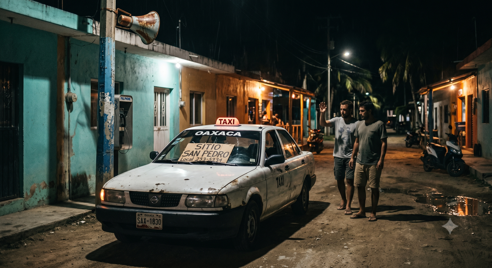

The Price of Freedom
Reflections on an event from circa 2003 • Penned in 2026
There was only one phone in town. Or perhaps it was simply the only public phone available. It was hooked up to a loud speaker that would blare your name across the area whenever an incoming call arrived, summoning you to come answer it.
He was locked inside a cage no larger than a dog kennel. They had kept him trapped there all afternoon and deep into the early morning. When I finally arrived at 3:00 AM, the guards told me I had to go track down the boss at his private residence and wake him up; he was the only one with the authority to let him out. We had to hail a cab to his house, rouse him from his sleep, and explain the situation: “Hey, my friend is in a pen. They nabbed him yesterday. I don’t know what else to do.” He smiled back at me—the distinct, knowing smile of a man who understands exactly how to negotiate a bribe.
We returned to the small police station where they were holding him. The officer reached into an old cabinet and pulled out the offending article: a single spliff tucked inside a cigarette box. I feigned absolute disgust. He looked at me and stated that the official fine would be 1,000 pesos. It was practically every last cent I had left in the world. I had never imagined that this was what my money would eventually buy—my friend’s literal freedom.

The entire layout was desperate. Seeing him crammed into that horrible, tiny cage was profoundly sad. And yet, this was the same person who had spent years torturing me. He had consistently made fun of me, obliterated my dreams, and guffawed at my expense in front of all my friends. He had beaten me up, stolen from me, and constantly put me down. But standing there looking through the bars, not once did it cross my mind to laugh at his misfortune. So, I paid the man, and the policemen finally released him from that wretched little cage.
There was someone else trapped in the station that night—a man who was clearly drunk and desperately begging for assistance. He looked at me and asked me to help him, too, but I never did.
We finally made our way back to our campsite-cum-hotel setup. He went straight to bed without uttering a single word, probably cuddling up immediately to his girlfriend at the time. He didn’t say thank you, or even offer a basic “Hey, I appreciate what you did.” In fact, he didn’t say thank you for ten long years, and even then, it was only because I explicitly asked him for it. I am certain that if I hadn't stepped in to bail him out, he would have found another way to survive—after all, it was his girlfriend who had initially woken me up so I could go help. He always possessed a distinct knack for getting others to do his heavy lifting. But even if he had treated me a thousand times worse than he did, I know I still would have saved him.